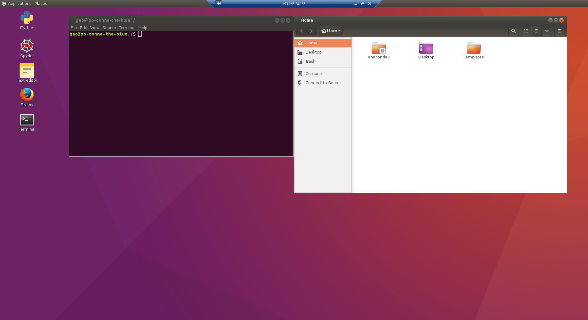

Windows: Connect to remote Computer Instance with Remote Desktop Connection tool¶
Remote Desktop Connection -tool is another remote desktop software that comes with every Windows computer. It is simple to use but has slightly less smooth user experience when compared to TightVNC. However, it is a good option since it can be used from any Windows computer (e.g., from the computers in the University’s libraries or your own Windows computer) without any additional software installation.
- Start the tool by clicking the Windows Start button and searching it with word ‘Etätyöpöytäyhteys’ (or ‘Remote Desktop Connection’ in english)
- Paste the IP address of your computer instance that you copied in the
previous step and press
Yhdistä(‘Connect’ in English)

Fill in the IP address
- Login to the computer instance by pressing OK.

Press ok
- That’s it! You’re inside the remote computer and ready to roll.

Inside the remote computer